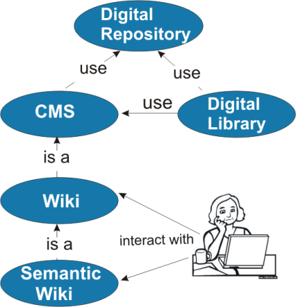

Data publicării: 29.04.2017
Autor articol: Mircea Vaida
Consideratii generale
Conţinutul problemei
Noua generație de internet se va caracteriza prin convergență dintre comunicarea socială şi informaţie îmbogaţită semantic. Virtualizarea este prezentă inclusiv la nivelul organizaţiilor şi a comunităților de utilizatori. Apariţia sistemelor de colaborare în masă (MC) conduce spre o simulare a lumii reale şi creerea unei reţele umane in jurul unul „obiectiv virtual”. Aceste sisteme se bazează pe colaborarea utilizatorilor într-o reţea socială, reteaua crescand si creând valori intelectuale în timp, dar şi exploatează acestă reţea pentru a-i furniza servicii.
Problemele apar când se decide plasarea rezultatului intelectual al comunităţii, în special pentru comunităţile virtuale. Acestea sunt caracterizate printr-un înalt grad de heterogenitate la mai multe nivele. Resursele digitale pot fi uşor stocate în multe sisteme accesibile prin web: portaluri, sisteme de management al conţinutului (CMS) sau depozitul digital (repository).
Integrarea metadatelor este necesară pentru a stabili comunicarea între sisteme multiple, unelte şi date. Creşterea rapidă a resurselor de internet şi a colecţiilor digitale a fost acompaniată de o proliferare a schemelor de metadate, fiecare dintre ele fiind construite în conformitate cu nevoile unei comunităţi particulare de utilizatori, utilizatori potenţiali, tipuri de materiale digitizate, domenii de aplicabilitate, necesităţile proiectelor, etc.
Tehnologiile de gestionare a depozitului digital au fost create iniţial pentru gestionarea metadatelor create cu scopul de a integra datele şi uneltele. [1].
Pentru integrarea şi managementul datelor, depozitul digital pune împreună în principal diferite modele de date, diferite scheme şi diferite unele software. Deşi publicarea datelor a fost considerată o activitate adiţională, ea devine acum parte a procesului ciclic de viaţă al obiectului digital fapt evident acum, mai ales in legatură cu provenienţa datelor de natură dinamică.
Managementul depozitului trebuie să fie considerat în contextul mai larg de integrare al informaţiei. El trebuie văzut ca o componentă a sistemului de management al conţinutului (CMS) în care managementul resurselor digitale este considerat împreuna cu managementului altor componente cum ar fi pagini web, diferitele înregistrări digitale, documente administrative, documentații tehnice, etc. Acest mediu lărgit în care depozitul digital coexistă şi cu care schimbă informații conţine date structurate şi nestructurate şi reprezintă baza de cunoștințe explicite şi de valoare a unei organizaţiei.[2].
Prin natura lui managementului conţinutul (CM) se adreseaza unei comunităţi interdisciplinare din cauza naturii colaborative a ciclului de viaţă al resurselor digitale [3].
In timpul ciclul de viaţă al informaţiei aceasta îşi sporeşte valoarea trecând prin: creare, aducere la zi, publicare, traducere, arhivare şi regăsire. Principalele componente ale uneltelor care asigură sistemel de management al continutului (CMS) urmează tocmai acst ciclu de viaţă al obiectului digital: crearea conţinutului, întreţinere şi versionarea, şi diseminarea conţinutului prin portale şi diverse facilităţi de căutare [4]. Majoritatea CMS pun la dispozitie şi unelte de adăugare a metadatelor la conţinut.
Depozitul digital şi biblioteca digitală sunt azi printre cele mai comune medii şi unelte pentru managementul şi diseminarea colecţiilor de obiecte digitale din domeniile culturale, educaţionale, ştiinţifice şi a altor tipuri de conţinut web.
Bibioteca digitală (DL) gestioneaza si furnizează acces la colecţii largi de informaţii peste un depozit digital de cunoştinţe. Informaţia în biblioteca digitală este bine organizată. De obicei este focalizeată pe categorizarea şi catalogarea resurselor digitale, furnizând informaţii de calitate utilizatorilor. Acest sistem de depozitare şi diseminare a informaţiei are limitările lui printre care: ambiguităţii de limbaj natural, nu promovează destul importanţa metadatelor şi nu angajează utilizatorii în procesul de transfer de cunoştinţe.
Ca o clasă speciala a CMS, depozitele digitale sunt curent folosite pentru gestionarea metadatelor utilizate cu scopul de a realiza integrarea unelte şi datelor. Depozitele sunt colecţii de obiecte digitale. Principalele caracteristici ale depozitului digital asa cum au fost descrise de (JISC) sunt:
arhitectura depozitului trebuie să fie destul de flexibilă încât să gestioneze atat conţinutul cât şi metadatele;
conţinutul este accesibil printr-un set de servicii de baza (put, search, get, etc);
depozitul trebuie să fie valabil şi de încredere, bine susţinut şi bine gestionat.
Funcţiile depozitului includ: achiziţia de documente, stocarea sigură şi păstrarea acestora controlul versiunilor, regăsirea documentelor şi prezentarea documentelor catre utilizatorul final [5].
Folosind terminologia specifică depozitului, gestionarea depozitului constă dintr-un set de activităţi referitoare la colectarea, combinarea, asimilarea, şi găsirea obiectelor digitale. Activităţile specifice sunt cele legate de curatoriat, raportarea şi păstrarea pe durată lungă.
Cercetări recente în domeniul bibliotecii digitale sunt concentrate pe îmbunătăţirea infrastructurii managementului sistemului de biblioteca digitală (DLMS) care este de obicei un sistem depozit, pe de o parte, şi îmbunătăţirea modelului metadatelor folosit pentru adnotarea colecţiilor de obiecte folosind webul tehnologiile semantice şi reţelelor sociale pe de altă parte. Calitatea globală a informaţiei aflate în biblioteca digitală poate beneficia si ea prin angajarea acestor tehnologii complementare, semantică şi socială.
Motivaţia de a stabili depozite este condusă de interesul comun pragmatic al diferitelor comunităţi: biblioteci digitale, cercetare, învăţare, ştiinţă, publicare, înregistrarea managementului şi păstrare informatiei.
Interdisciplinaritatea în diferite domenii oferă posibilitatea combinării de tehnologii diverse. Este de asemenea o oportunitate pentru a realiza interschimburi de informatie, unelte, si dezvoltarea muncii de colaborare.
CMS contra Depozit.
La prima vedere, nu este diferenţe între CMS şi depozite digitale. O mai clară abordare este aceea că CMS poate fi folosit ca platformă pentru dezvoltarea resurselor, ori de câte ori funcţionalităţile acesteia sunt cerute. Mai mult, sistemele de depozit digital (DSpace, Fedora Commons) sunt folositoare pentru păstrarea unei versiuni de referinţă a resurselor digitale de orice fel, şi poate fi asimilată cu funcţionalitatea unei arhive permanente în scopul păstrării de lungă durată [4].
Depozitul contra Biblioteca Digitală
În depozite, utilizatorii devin producători activi prin interacţiunile comunităţii de bază a metadatelor; de aceea biblioteca digitală poate furniza rezultate ale căutării mult mai concentrate şi mai exacte prin tehnicile de recomandare [6]. Modelul de infrastructură al bibliotecii digitale – nivelul de management al sistemului sistemului bibliotecii (DLMS) este construit pe un sistem de depozit digital.
Principalele modele de depozite digitale şi biblioteci digitale
Managementul depozitului cuprinde un set flexibil de procese şi practici, care depind de modelul sistemului de depozit, de conţinutul depozitului şi destinaţia lui şi de comunitatea care vrea să utilizeze şi să extragă beneficii din exploatarea lui.
Modelele principale pentru depozite şi biblioteci digitale sunt divizate în următoarele categorii:
- modelul formal – 5S (fluxuri, spaţii, structuri, scenarii, societate) este cel mai cunoscut depozit formal şi model de bibliotecă digitală [7].
-
Modelul de referinţă – model de referinţă pentru un sistem deschis de arhivare a informaţiei (OAIS) [8]. Modelele derivate din OAIS sunt:
- modelul de referinţă in 3 straturi, cunoscut si sub numele de modelul Delos [9];
CIDOC modelul de referinţă conceptual [10].
- Modelul semantic de bibliotecă digitală. Acest model este bazat pe modelul OASIS dar permite mai fina granularitate în structura şi serviciile furnizate utilizatorului final [11].
Aceste modele se balansează între două extreme: prea multa formalizare a modelului 5S, dar descrierea foarte bună la nivel structural, sau modelul Delos, care nu este foarte uşor adoptat de către o comunitate mică sau medie cu un nivel scăzut de expertiză tehnică.
Aceste modele sunt de obicei numai ghiduri pentru implementatori, dar nu pot impune standarde pentru servicii şi protocoale. Implementatorii pot alege unul dintre modelele menţionate, dar de obicei ei adoptă un model hibrid. Recent, cel mai comun model de hibrid ales de implementatori, este modelul OAIS imbunatatit cu caracteristici semantice, aşa cum Cornell University a adoptat pentru Fedora Commons.
Principalul neajuns al implementării acestui model hibrid este însuşi procesul de management al depozitului. Frecvent, aceasta este o decizie administrativă şi nu o problemă de software. Câteodată, este adoptată şi o implementare adiţională facuta de terţi, dar care numai parţial adresează problematica generală. De cele mai multe ori, aceste implementari nu sunt puse la dispoziţie întreagii comunităti care ar putea-o folosi.
O soluţie posibilă este să adoptam sistemul semantic de depozit digital ca tehnologie de stocare si management al bibliotecii digitale.
Sistemele de depozit semantice sunt încă la începuturile lor, chiar direct există deja câteva implementări disponibile. Sistemele pur semantice sunt însă soluţii de-a gata. Asemenea soluţii necesită experţi de configurare şi mai apoi de întreţinere. Aceasta solutie se potriveşte mai bine in cazul dezvoltării depozitului instituţional (academic, guvernamental).
Aceste sisteme de management semantice complică în fapt şi mai mult managementul metadatelor în plus, se bazeaza pe evoluţia ontologiei [12].
Alegerea unui model complet de depozit semantic este în afara expertizei unor comunităţi mici sau medii, acestea neputând înţelege foarte bine ontologiile şi evoluţia lor. Acest fel de comunităţi care încearcă să creeze o DL pentru învăţare electronică sau un mediu de cercetare virtual (VRE) este nevoita iniţial să angajeze câţiva experţi care să ajute la configurarea şi setarea sistemului de depozit, dar după aceea este necesar să se adopte un protocol automat pentru managementul şi întreţinerea depozitului.
Caracteristicile managementului depozitului digital
Pentru activitatea de management, nu există o reţetă predefinită pentru publicarea fluxurilor de lucru, dar de obicei uneltele şi specialiştii cu rol şi responsabilităţi concrete sunt implicaţi în acest proces. Una dintre cele mai importante activităţi care are legătură cu managementul depozitului stabileşte modelul de conţinut şi verifică calitatea metadatelor.
Calitatea metadatelor depinde de acest fragil echilibru: cât de multe metadate trebuie să înregistreze providerii de date sau să adauge uneltele inteligente? Fără calitate, substanţă şi standardizare metadatelor, resurselor digitale stocate în depozite le lipeşte un ingredient vital care face ca acestea să fie utile pe web. Fără metadate de calitate, şansele ca un conţinut să fie găsit sunt semnificativ diminuate. Modele, tratatele şi strategiile de colaborare sunt dezirabile aici ţmpreunî cu procesele automate pentru susţinerea efortului comunităţii şi scutirea utilizatorilor de munci împovărătoare, manuale.
Conţinutul – documentele electronice, multimedia, conţinuturile de web şi în special conţinuturile multimedia, sunt costisitoare de creat şi gestionat. Studii ca [13] au punctat faptul că majoritatea costurilor împovărătoare de gestionare a metadatelor sunt de obicei costuri umane.
Paradigma Web 2.0 face model tradiţionalul producător – consumator OAIS [14] un model depăşit. El promovează o nouă tehnologie care schimbă granularitatea (devine mai fină) şi conţinutul tipologiei (devine mai larg). Mai mult decât atât, un fenomen nou este apariţia în interiorul unor comunitati a unui depozit digital, facilitat de softul social creat de comunitate, cum este sistemul wiki. În afară de implementarea modelului clasic, ele utilizează protocoale şi servicii simple pentru simularea funcţionalităţii depozitului digital, dar nu şi pentru gestionarea depozitului. Gestionarea depozitului poate fi o problemă software, dar cel mai adesea o decizie administrativă intermediată de software.
Trecerea, de la modelul producător – consumator (unul la mai mulţi) la modelul creează-remixează-partajeaza (mulţi la mulţi), de asemenea a schimbat catacteristicile managementului conţinutului [12]. Aspectele referitoare la granularitatea conţinutului, tipologia conţinutului şi metadata trebuie să fie reconsiderate pentru a fi create şi gestionate colaborativ.
Pe de altă parte, depozitul pur semantic are nevoie de extensii pentru a achiziţiona funcţionalităţi îmbunatăţite.
Critic, nivelul de expertiză tehnologică cerut de soluţiile mai sus menţionate este în afara înţelesului multor comunităţi mici şi medii [15].
O soluţie pentru o comunitate închisa constă în folosirea depozitul partajat furnizat de un sistem wiki. Extensiile wiki se pot folosi ca infrastructură pentru gestionarea depozitului şi pe uneltele create la comanda în procesul de management automat al depozitului. Mai departe, ele pot folosi serviciile semantice simplificate wiki pentru a îmbunătăţi căutarea, interconectarea diferitelor sisteme şi transferul de date [16]. Serviciile sociale furnizate de wiki lasă utilizatorii să beneficieze de nivelul de expertiză a fiecăruia dintre ei [17]; împreună ei îşi îmbunătăţesc cunoştinţele schimbând informaţiile între ei şi gestionând depozitul digital.
Obiective generale şi specifice
Această teză prezintă, pornind de la modelele mai sus menţionate şi modelele de sistem de colaborare în masă, un nou model de gestionare a depozitului, numit modelul colaborativ de management al depozitului digital (CDRM). Noutatea acestei idei reiese din implicarea comunităţii reţelei sociale formată în jurul depozitului clasic în întregul proces de management al depozitului. Pentru a echilibra nevoia de funcţionalităţi avansate, nivel mic de expertiză tehnologică şi costuri mici de gestionare, infrastructura trebuie să suporte protocoale, unelte, procese automate şi tehnologii semantice.
Obiectivul specific al tezei este focalizat pe managementul colaborativ al depozitului de metadate, în interiorul unei comunităţi mici sau medii caracterizată printr-un nivel scăzut de expertiză tehnologică.
Această teză explorează de asemenea impactul tehnologiilor de semantic web asupra evoluției bibliotecilor digitale si modul in care cercetătorii si bibliotecarii beneficiază de aceste tehnologii folosindu-le pentru o mai bună aservire a furnizorului de date si a utilizatorului final. Având suportul tehnologiilor semantice pe de o parte şi abordarea specifică reţelelor sociale, pe de altă poarte, întregul proces de management al depozitului digital va fi translatat de la specialişti la utilizatori de zi cu zi cât mai mult posibil. Utilizatorii sunt sprijiniţi – însă nu forţaţi – sa colaboreze la structurarea, organizarea, formarea şi validarea metadatelor lor şi a altor resurse, într-un mediu adaptabil, pentru o mai bună căutare şi refolosire a resurselor.
Mai specific, se intenţionează să:
îmbunătăţească procesul de management al depozitului de metadate pentru a suporta autogestiunea comunității şi automatizarea proceselor managementului depozitului. Automatizarea procesului este suportată de şabloane (templates), tehnologiile semantice şi unelte special create. Autogestiunea trebuie să răspundă la provocarea principală a managementul depozitului: să construiască un depozit digital şi să beneficieze de serviciile depozitului fără să împovăreze creatorii de conţinut şi utilizatorii finali cu procese adiţionale [18].
dezvoltarea soluţiilor orientate spre utilizatori finali cu scopul de a face conţinutul digital mult mai accesibil, uşor de folosit şi exploatat, folosind tehnologia semantică. Managementul depozitului este o parte a integrării datelor care la randul său este principalul domeniu de aplicare a ontologiilor.
scăderea semnificativă a dezorientării utilizatorilor, costurilor implicate şi a timpului de procesare. In consecinţă, furnizorii de date şi utilizatorii finali se pot focaliza pe schimbul de resurse şi crearea colaborative a cunoştinţelor, fiind scutiţi de sarcini împovărătoare adiţionale.
creşterea semnificativă a implicării utilizatorilor în procesul de management al depozitului prin translatarea răspunderii de la dezvoltatori la utilizatorii de zi cu zi. Această implicare are un rezultat concret : creşterea nivelul de calitate al metadatelor.
Obiectivele menţionate mai sus sunt rezolvate folosind modele propuse, arhitecturi şi metode:
modelul de referinţă bidirecţional dezvoltat pentru managementul colaborativ depozitului. Noul model creat reconsideră părţi din modelele principale de literatură carora le măreşte flexibilitatea prin adăugarea de noi funcţionalităţi inspirate din principiile sistemelor de colaborare în masă. Acest model încapsuleaza diferite aspecte ale logicii modelului de referinţă: ontologia aplicatiei (AO), ontologia fluxului de lucru (WO), şi ontologia depozitului digital (RO). Modelul de referinţă este decuplat de la modelul depozitului digital, trecand şi în sfera de acoperire a problemei integrării metadatelor indiferent de mediul de stocare specific.
Arhitectura de referinţă bazată pe modelul mediator, ceea ce reflectă designul şi suplinește cererile modelului de referinţă şi de asemenea capturează informaţiile colectate de-a lungul timpului în metadate.
trei arhitecturi concrete şi implementări derivate din modelul propus anterior.
Aceste trei arhitecturi concrete ale modelului de referinţă corespund cu colectarea, agregarea şi căutarea metadatelor, sunt fiecare utilizate pentru scopuri specifice. Ele rezolvă trei cazuri concrete în legatura cu integrarea datelor în interiorul comunităţilor mici şi medii urmarind să construiască VLEs sau VREs. Prin aceste arhitecturi concrete este verificat conceptul bidirecţionl al modelului de referinţă.
noul model de platformă pentru evaluarea nivelului de utilitate a rezultatului primei implementări.
Acest obiectiv este asociat cu realizări tehnologice şi de asemenea beneficiile derivate din utilizarea sus numitelor metode si unelte tehnologice.
Întrebările cercetarii
Această teză își propune sa răspundă la următoarele întrebări de cercetare:
Care sunt factorii care influenţează necesităţile şi beneficiile în managementul depozitului de metadate?
Care este modelul cel mai potrivit pentru reprezentarea artefactelor aflate în diferite grade de formalizare şi permite folosirea lor în mod uniform?
Care metodă este cea mai potrivita pentru încurajarea participării utilizatorilor la întregul proces de management al conţinutului digital?
Ce metodologie este curent acceptată pentru a contra-balansa nivelului scăzut de expertiză tehnologică a utilizatorilor finali, cu nivelele ridicate ale necesităţilor funcţionale şi non-funcţionale pe care platforma finală ar trebui să le îndeplinească?
Care este cel mai potrivit mediu care poate să suporte tehnologiile webului semantic (ontologiile) pentru a unifica diferitele standarde de metadata? Poate acest mediu să ascundă complexitatea acestui proces pentru utilizatorii finali?
Cum validăm calitatea metadatelor şi cum lucrăm cu diferitele interpretări ale metadatelor furnizate de provide-rii de date adoptând metode neintruzive?
Modelul conceptual este destul de general pentru a suporta derivaţiile şi constrângerile cerute pentru realizarea unui mediu virtual de cercetare unde furnizorii de metadate şi cercetătorii care adnotează resursele digitale sunt tehnologic agnostici?
Contribuţii
Această teză adresează managementului colaborativ al depozitului digital la intersecţia computerului cu omul: o platformă pentru managementul colaborativ al depozitului şi managementul fluxurilor de lucru şi care permite adnotarea colaborativa a conţinutului digital utilizând Semantic MediaWiki. Principalul obiectiv este contribuţia la îmbunătăţirea tehnologiilor pentru schimbul de cunoştinţe colaborative, iar în mod specific integrarea datelor. În acest context, focalizarea este pe zonele de aplicaţii specifice ale îmbunătăţirii managementului depozitului digital folosind tehnologia semantică şi construirea infrastructurii informaţiei.
Principalele contribuţii ale acestei teze sunt:
o analiză comprehensivă a modelelor de depozit digital, a bibliotecilor digitale şi modelelor de management a depozitului digital; un studiu comparativ al sistemelor de semnatic wikis.
propunerea unui nou model de referinţă şi o arhitectură de referinţă pentru managementul depozitului digital.
propunerea unei ontologii la nivel înalt pentru managementul colaborativ al depozitului digital.
propuneri pentru trei arhitecturi concrete, dezvoltate ca cadre separate de lucru pentru managementul colaborativ al depozitului digital.
implementarea rezultatelor teoretice în sistemul practic pentru a face rezultatul acestei teze accesibil pentru utilizatori.
realizarea practica a managementul conţinutului de depozit şi a adnotarilor semantice.
Un cadru pentru evaluarea rezultatelor implementarilor folosind modelul Semantic MediaWiki in comparatie cu modelul de interoperabilitate Systes of Systems Interoperability (SoSI), şi un cadru pentru evaluarea utilizabilităţii.
Definiţii şi fundamente
Acest capitol prezintă mai multe definiţii, relevă anumite caracteristici de gestionare a resurselor digitale, acordându-le însă diferite ponderi de importanţă. Pornind de la conţinutul digital şi terminând cu o definiţie informală de depozit digital şi bibliotecă digitală, se introduc treptat termenii relativi la managementul resurselor digitale, selectaţi în conformitate cu obiectivele generale ale tezei. Legat de managementul depozitului digital, se va studia modelul de adnotare şi implementarile privind adnotare imaginilor.
Secţiuni ale acestui capitol sunt axate pe două probleme diferite, strâns legate de gestionarea depozitului de metadate.
În primul rând, deoarece managementul este o activitate orientată pe proces, se vaor rezuma din punct de vedere conceptual fluxurile de lucru.
În al doilea rând, având în vedere problema integrării de metadate, se vor analiza problemele eterogenităţii la mai multe niveluri. Vor fi relevate mai multe metode şi practici pentru a abordarea problemele de interoperabilitate, rezumate din literatura de specialitate. În plus, vor fi prezentate pe scurt modelele mature de interoperabilitate, ca o metodă alternativă posibilă pentru evaluarea interoperabilităţii la nivelul sistemelor.
Definitii legate de managementul depozitului digital
Conţinutului digital, sau pur şi simplu, conţinutul, este informaţie digitală, care poat include documente electronice, fişiere multimedia, conţinut Web sau altă formă de tipuri de fişiere, cu un ciclu de viaţă care necesită management.
O subclasă a conţinutului digital sunt valorile digitale (digital asset), cum ar fi fotografii digitale, animaţii, clipuri video şi muzică.
Procesul de management al conţinutului, sau CM, este un set de procese şi tehnologii care sprijină ciclul de viaţă evolutiv al conţinutului digital.
În funcţie de misiunea şi obiectivele de business, managementul conţinutului poate varia în funcţie de etapele procesului, de terminologie şi de management. De obicei, ciclul de viaţă al conţinutului digital constă în mai multe etape principale: crearea, actualizarea, publicarea, traducerea, arhivarea şi regăsirea, având ca o caracteristică comună colaborarea dintre creator, redactor, editor, administrator şi consumator.
Sistemele de management al conţinutului (CMS) sunt programe de calculator şi /sau sisteme hardware-ul utilizate pentru a sprijini şi a gestiona fluxul de lucru tehnic necesar pentru a crea colaborare, edita, revizui, indexa, căuta, publica şi arhiva conţinutul digital.
CMS sunt frecvent utilizate pentru stocarea, controlul versiunilor, publicarea şi documentarea specifică cum ar fi articole de ştiri, manuale de operatori, manuale tehnice, ghiduri de vânzări, şi broşuri de marketing. Procesul de publicare este de obicei asumat de un CMS, cu un instrument software integrat pentru authoring. Acest instrument ar trebui să permită utilizatorilor non-tehnici să creeze şi să gestioneze cu relativă uşurinţă conţinut.
Sistemele de depozitare utilizate de către CMS pot include o bază de date. Conţinutul, cum ar fi metadatele şi / sau artefacte, sunt frecvent stocate ca fişiere XML.
Indiferent de terminologia specifică utilizată, procesul de management (sau de gestionare a resurselor digitale) constă în colectarea şi depozitarea de valori în format digital. Valorile digitale sunt stocate împreună cu “metadatele” sale.
Metadatele sunt piese primare de informaţie, care descriu aspectele semnificative ale unei resurse, şi ajută la gestionarea şi conservarea materialului digital de-a lungul timpului. Ele vor contribui la prezervarea informaţiilor esenţiale contextuale, istorice, tehnice şi sunt păstrate, împreună cu obiectele digitale având un rol crucial in descoperirea acestora.
Un depozit digital este o platformă pentru gestionarea, stocarea şi furnizarea de acces într-un mod convenabil la conţinutul digital.
O altă definiţie, publicată de către Joint Information Systems Committee (JISC) [19], subliniază funcţionalitatea unui depozit:
“… Un depozit digital se deosebeşte de alte colecţii digitale prin următoarele caracteristici:
conţinutul este depozitat într-un depozit, fie de către creatorul conţinutului, proprietarul sau o terţă parte
arhitectura depozitului gestionează conţinut precum şi metadate
depozitul oferă un set minim de servicii de bază, de exemplu, stocare, primire, căutare, controlul accesului.
depozitul trebuie să fie durabil şi de încredere, bine susţinut şi bine gestionat “.
În afară de atributele de mai sus, este de remarcat o caracteristică suplimentară, pentru că ea face diferenţierea faţă de alte sisteme software similare: depozitul digital asigură “acces liber”, cel puţin parţial [19]. Depozitele digitale deschise se disting prin următoarele caracteristici:
depozitul trebuie să ofere acces deschis la conţinutul acesteia (dacă nu există constrângeri legale),
depozitul trebuie să ofere acces deschis la metadate pentru recoltare.
Scopul principal al unui depozit este de a menţine şi a deriva valoarea maximă ce provine din conţinutul acestuia. Un depozit poate sprijini activităţi umane cum ar fi cea de cercetare, de învăţare şi a proceselor administrative. Depozitele utilizează standarde internaţionale deschise, pentru a asigura că, conţinutul lor este accesibil, astfel încât să poată fi căutat si preluat pentru o utilizare ulterioară. Utilizarea acestor standarde acceptate internaţional permite stabilirea de strategii pentru importul, exportul, identificarea, stocarea şi regăsirea conţinutului digital în depozit.
Biblioteca Digitală (DL) este un sistem care oferă acces larg la o colecţie mare, gestionabilă de informaţii, organizată peste un depozit de cunoştinţe. Tema unificatoare a unei biblioteci digitale este aceea că informaţia este organizată pe calculatoare organizate în reţea, având proceduri pentru selectarea materialelor din colecţii, pe care le organizează, le pune apoi la dispoziţia utilizatorilor, şi le arhivează.
Aici, utilizatorii nu au acces doar la conţinutul digital din depozit, mai mult, ei au instrumente pentru a re-organiza şi îmbogăţi conţinutul prin adnotări, construirea colecţiilor, şi bookmarking.
O bibliotecă digitală trebuie să gestioneze documente compuse, ceea ce este o caracteristică DL. Documentele compuse poat fi destul de complexe, şi de multe ori conţin mai multe documente multimedia, în cazul în care componentele sunt obiecte digitale la propriu, sau doar simple adnotări. Un obiect compus ar putea fi o intreaga baza de date.
Termenii “depozit digital” şi “biblioteci digitale” sunt confundaţi de multe ori. Pentru restul acestei teze, se vor folosi fiecare termen în conformitate cu definiţiile date.
Soergel în [20] defineşte depozitul digital în termenii funcţionalităţii (servicii oferite bibliotecii digitale):
Un depozit digital este o bibliotecă digitală care oferă acces doar la o colecţie de elemente cunoscute.
Funcţiile depozitul includ si achizitionarea de documente, depozitarea în condiţii de siguranţă, de conservare, de control al versiunii, căutarea documentelor şi prezentarea lor.
Un depozit, de asemenea, are nevoie de un model de document care defineşte structura logică a documentului şi modul în care un document este accesat şi manipulat în scopul gestionării, cum ar fi modelul bazat pe XML Document Object (DOM) [21] (a se vedea Wikipedia), sau Fedora Digital Object Model [22].
Obiectul digital
Obiectele digitale (sau materiale digitale) referă orice element care este disponibil digital. Termenul cuprinde atât surogate digitale create ca rezultat al convertirii materialelor analoge în formă digitală (digitizare), cât şi cele “născute digital”, pentru care nu a existat niciodată şi nu există nici o intenţie de creere a unui echivalent analogic.
Agregările (Colecţii)
Colecţia este o agregare de obiecte digitale împreună cu relaţiile dintre ele. Colecţiile, în general, suportă următoarele funcţii:
selectarea de conţinut: selectarea unui subset de obiecte disponibile;
organizarea: aplicarea unor principii coerente de ordonare;
documentaţie: metadatele contextuale, moştenite şi administrative;
arhivare: administrare pe termen lung.

Bibliografie
Schindler, C. and Rittberger, M. (2009). Herausforderungen für die Gestaltung von wissenschaftlichen Informationsinfrastrukturen durch Web 2.0. In: Information – Wissenschaft & Praxis, 60, 4, 215-224
JaWE based process editor http://www.jped.org/ (Accessed: 21/04/2017)
Veja, C., 2009, K2N-DCMI-Europeana metadata elements mappings, http://biowikifarm.net/meta/K2N-DCMI-Europeana_Metadata_Elements_Mapping. (Accessed: 21/04/2017)
Metcalf, C. and Lewis, G.A. (2006) Model Problems in Technologies for Interoperability: OWL Web Ontology Language for Services (OWL-S). (CMU/SEI-2006-TN-018) Pittsburgh, PA: Software Engineering Institute, Carnegie Mellon University, April 2006, http://www.sei.cmu.edu/reports/06tn018.pdf. (last visited 21.04.2017).
Kawamoto, K., Kitamura, Y. and Tijerino, Y. (2008). KawaWiki: A Template-Based SemanticWiki Where End and Expert Users Collaborate, 2008
Alboaie, L. (2008): PRES – Personalized Evaluation System in a Web Community – A Conceptual Model Designed to Evaluate Reputation in Order to Achieve a Personalized View on the System for Each User. ICE-B 2008: 64-69.
Giurgiu, M., Homodi, A. Veja, C., Hagedorn, G. and Nimis, P. L.. ‘A search tool for the digital biodiversity resources of KeyToNature’, Nimis P. L., Vignes Lebbe R. (eds.), Tools for Identifying Biodiversity: Progress and Problems, Paris September 2010, pp. 19-24
Trappey, C. V. Trappey, Amy J.C., Huang, C.-J., Ku, C.C. (2009). The design of a JADE-based autonomous workflow management system for collaborative SoC design. Expert Systems with Applications 36 pg. 2659–2669
Candela, L., Castelli Donatella, and Pagano, P. (2007). A Reference Architecture for Digital Library Systems: Principles and Applications in C. Thanos, F. Borri, and L. Candela (Eds.): Digital Libraries: R&D, LNCS 4877, pp. 22–35, 2007.Springer-Verlag Berlin Heidelberg
CIDOC Conceptual Reference Model – Information Groups http://www.cidoc-crm.org/Version/version-6.2 (last visited 21.04.2017).
Krötzsch, M., Vrandecic, D. Völkel, M. Haller, H., Studer. R. (2007). Semantic Wikipedia. In Journal of Web Semantics 5/2007, pp. 251-261. Elsevier 2007
Martin, M., Gerber, D., Heino, N., Auer, S. and Ermilov, T. (2010). “Managing Multimodal and Multilingual Semantic Content”. In: Proceedings of the 7th International Conference on Web Information Systems and Technologies, 2010
Tolk, A. (2006). What comes after the Semantic Web – PADS Implications for the Dynamic Web, Proceedings 20th ACM/IEEE/SCS* Workshop on Principles of Advanced and Distributed Simulation, IEEE/ACM Press, 2006
Tolk, A., Turnitsa, C. and Diallo, S. (2008). Implied Ontological Representation Within the Levels of Conceptual Interoperability Model. Intelligent Decision Technologies, 2(1):3–20, 2008
Veja, C., Hagedorn, G., Weber, G. and Giurgiu, M. ‘Semantic MediaWiki Interoperability Framework from a Semantic Social Software Perspective’, Proc. of International Symposium on Electronics and Telecommunications ETC 2010, Timisoara, November 2010, pp. 403-406
Kollias, St. and Cousins, J.(2008) Semantic Interoperability in the European Digital Library, Proceedings of the First International Workshop, SIEDL 2008, Tenerife, June 2, 200
Parr, T. (2004). ‘Enforcing Strict Model-View Separation in Template Engines’. In: Proceedings of WWW2004 Conference, May 17–20, 2004, New York, USA. ACM 158113844X/04/0005
Janev, V., & Vraneš, S. (2010) Applicability assessment of Semantic Web technologies. Information Processing and Management (2010), doi:10.1016/j.ipm.2010.11.002
Hestenes, D. 2006. Notes for a Modelling Theory of Science, Cognition and Instruction, In: Proceedings of the 2006 GIREP conference: Modelling in Physics and Physics Education, http://modeling.asu.edu/R&E/Notes_on_Modeling_Theory.pdf, (last visited: 21.04.2017)
Spivack, N. Making Sense of the Semantic Web, http://www.mindingtheplanet.net
http://www.w3.org/TR/DOM-Level-3-Core/introduction.html, (last visited: 21.04.2017)
Fensel, D. Ontologies: A Silver Bullet for Knowledge Management and Electronic Commerce, 2nd Ed.; Springer, Berlin, 2004